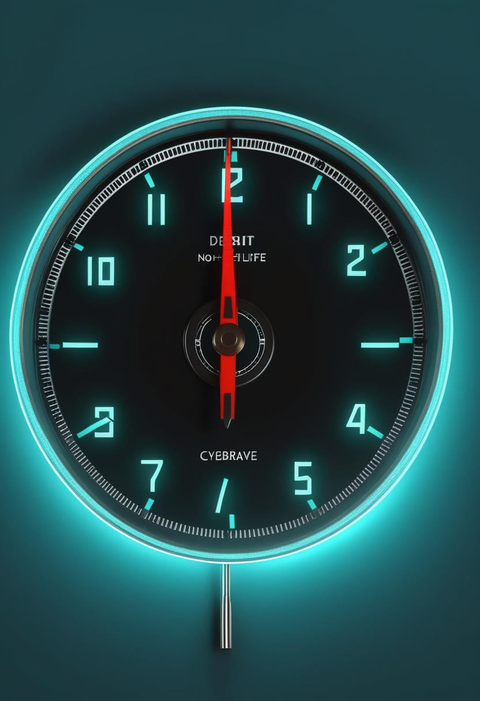
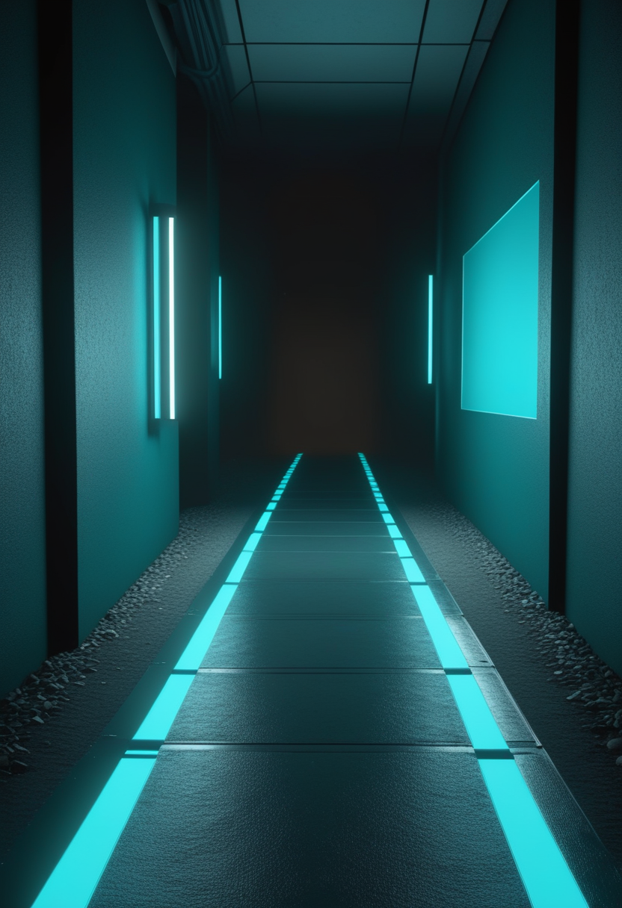
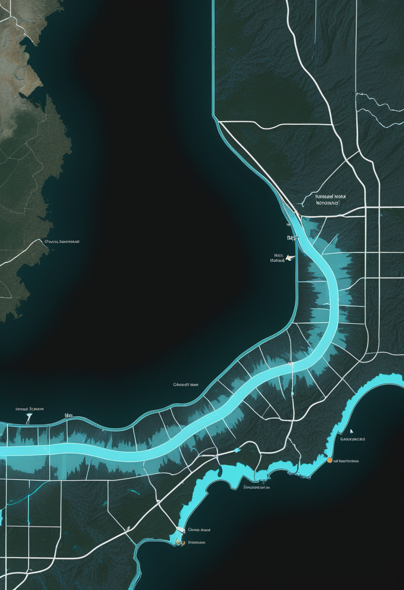

火曜日の便り。DRC政府は9月28日(月)、ブンディブギョ型エボラの累計が確定8,067例・死亡3,901人(致死率48.4%)になったと公表した。前号(9/28号)のWHO公式値7,890例・3,799人から+177例・+102人増え、2018〜2020年の北キブ・イトゥリ流行を上回ってDRC史上最大の流行になった。承認薬もワクチンもないブンディブギョ型が、記録を更新し続けている。国内ではインフルエンザ注意報が岡山県にも広がり、中四国で早期流行が鮮明になった。命の章は、本日9月29日に広島で開幕する世界筋学会と、遺伝子治療の現場が『早さ』を最大の変えられる要因とする総説を伝える。自由の章は、脳の表面に貼る方式のBCIを開発するPrecision Neuroscienceが2億5,000万ドルを調達したことを届ける(視線入力は今号も新規の一次情報を得られなかった)。畏敬の章は、中国天眼FASTと米DESIが45億年分の中性水素の変化を測り『星形成率の低下は燃料切れが主因ではない』と示した成果、チャルマース工科大学の量子操作1,000倍高速化、NASA Crew-13のフロリダ入りを並べる。美の章は、脳のデジタルツインは計算より測定が壁になるという総説と、80,000年前の矢じりが中央アジアの高度な技術を示すという発見を届ける。
9/28号の続報 — 前号はWHO公式値として確定7,890例・死亡3,799人(致死率48.1%、9月23日時点)を伝えた。DRC政府は9月28日(月)、公衆衛生機関の最新の状況報告として、累計が確定8,067例・死亡3,901人(致死率48.4%、本紙検算で3,901÷8,067と一致)になったと明らかにした。集計時点の異なる単純比較には注意が要るが、前号比では+177例・+102人。5月15日の流行宣言から約4か月半で、これまでDRC史上最悪とされた2018〜2020年の北キブ・イトゥリ流行(約3,500例)を大きく上回り、規模では2014〜2016年の西アフリカ流行(感染2万8,600人超・死亡1万1,000人超)に次ぐ水準になった。WHOは5月16日にこの流行を国際的に懸念される公衆衛生上の緊急事態(PHEIC)に指定している。
神経筋疾患の国際学会、世界筋学会(WMS)の第31回大会が本日9月29日から10月3日まで広島で開かれる。アジアでの開催は2010年の熊本(第15回)以来2回目。850件を超える抄録が全体講演・短い口頭発表・ポスターに振り分けられた。SMAの主要企業(Biogen、Novartis、Roche、Scholar Rock)の発表予定は本号の締め切り時点でも確認できなかった(Sareptaは同学会での発表を告知しているが、主にデュシェンヌ型筋ジストロフィーの領域)。ISEMBYLDの米国承認やsalanersenの第3相開始の直後であり、会期中のSMAのデータに注目したい。

医療情報サイトGlobalRPHは9月、総説「Gene Therapy for Spinal Muscular Atrophy in 2026: Lessons from the Frontlines」を掲載した。米国では年齢と投与経路の異なる2種類のオナセムノゲン アベパルボベク製剤(静注のゾルゲンスマと髄注のItvisma)が並び、実務上の課題は『適切な患者に、機能を守れるほど早く、適切な製剤を届けること』と、長期にわたる安全性監視と支持療法の管理にあると指摘する。患者選択、治療準備、毒性の監視、治療の順序、生涯にわたるケアを論点とし、早期治療が運動機能の転帰を左右する最も強い『変えられる』予測因子だとまとめた。日本でも2026年4月、2歳以上を対象とする『ゾルゲンスマ髄注』が承認されている。
会場が動く週と、届け方を論じる総説が重なった。承認薬が増えるほど、次の課題は薬そのものでなく『誰に・いつ・どの製剤を』届けるかという実務に移っている。広島の会期中に、この問いへの具体的な答えが増えるかを見ていきたい。
脳の表面に薄い膜状の電極を置く方式のBCIを開発する米Precision Neuroscienceは9月24日、2億5,000万ドル(約370億円、1ドル=148円換算の目安)のシリーズDを完了したと発表した。Pershing Square、Ackman Oxman Instituteなどが主導し、ARK Invest、Mubadala Capital、日立系のHitachi Venturesなども参加。2021年の創業以来の累計調達額は4億3,000万ドルになった。同社は電極『Layer 7 Cortical Interface』でFDAの認可(埋め込み30日以内)を得ており、18医療機関で100件超の手技を実施、Medtronicと商用提携している。資金は臨床プログラムの拡大、FDAのさらなる審査、商用化の基盤づくりに充てる。視線入力は今号も直近1〜2週の新規一次情報を取得できなかった。
臨床実績が先に積み上がり、資金がそれを追いかける順番になった。18医療機関・100件超という手技の実績が、シリーズDという規模の資金を引き寄せている。視線入力は今号も新規情報を得られなかったが、BCIの臨床応用が広がるまでの間、いまも最も身近な意思伝達の手段であり続けている。
DRC政府が9月28日(月)に公表した最新の状況報告によると、累計は確定8,067例・死亡3,901人(致死率48.4%)。5月15日の流行宣言から約4か月半で、DRC史上これまで最大だった2018〜2020年の流行を上回った。ブンディブギョ型エボラには承認されたワクチンも治療薬もなく、影響は7州63保健区に及ぶ。北キブ州のブテンボやゴマでも治療センターが稼働している。規模では2014〜2016年の西アフリカ流行(感染2万8,600人超・死亡1万1,000人超)に次ぐ。

岡山県は9月28日、県内の定点当たり報告数が流行開始の目安とする『1』を上回ったとして、県下全域に『インフルエンザ注意報』を発令した。発令を始めた2000年以降、新型インフルエンザが世界的に流行した2009年に次いで過去2番目の早さ。広がっているのは2009年と同じH1N1型だが、流行入りが早まった具体的な要因はわかっていない。県はマスク・手洗い・換気・適度な湿度の維持と早めのワクチン接種を呼びかけている。前号までの東京都・千葉県・富山県・埼玉県・大分市に続き、中四国にも早期流行が及んだ。厚生労働省の全国の第38週値は本号でも取得できなかった。
エボラは8,000例を超え、DRCにとって過去最大の流行になった。承認薬もワクチンもない型であることを踏まえると、次のWHO疫学更新で北キブの伸びがどう動くかが焦点になる。国内のインフルエンザは関東・北陸・九州・中四国と面を広げ、全国値の公表が待たれる。
中国科学院国家天文台、上海天文台、上海交通大学などの国際チームは、中国天眼FASTと米国の暗黒エネルギー分光装置DESIの共同観測で、過去45億年の宇宙の中性水素の変化を高精度で測定し、Nature Astronomyに発表した。45億年前の星形成率は現在の約2.5倍だったのに、原子状の中性水素の密度は約1.4倍にとどまっていた。燃料切れが主因なら両者は同じように減るはずで、データはこの説明を支持しない。第一著者の張伝朋氏(国家天文台)らは、中性水素から分子水素、そして星へと『加工』する過程の変化が本当の要因だとみる。発表は9月初めで、FAST落成10周年(9月25日)にあわせて再び報じられた。FASTが発見したパルサーは1,300個を超えた。
スウェーデンのチャルマース工科大学のTangyou Huang、Lei Du、Lingzhen Guoの3氏は、Physical Review Lettersに『Single-Period Floquet Control of Bosonic Codes with Quantum Lattice Gates』を発表した。超伝導回路のボソン符号(誤りに強い量子情報の符号化方式)を操作する際、従来は数千回の制御周期を繰り返していたところを、『量子格子ゲート』とフロケ制御で1周期に縮め、幅広い高度な量子操作を1,000倍以上高速化できるという。操作時間が短いほど誤りにさらされる時間も減るため、誤り耐性のある量子計算機に近づく成果とされる。9月10日の発表で、理論提案の段階である。
NASAのジェシカ・ワトキンス、ルーク・デラニー両飛行士、カナダ宇宙庁のジョシュア・クトリク飛行士、ロスコスモスのセルゲイ・テテリャトニコフ宇宙飛行士の4人は9月26日午後0時56分(米東部夏時間)、ヒューストンのジョンソン宇宙センターからNASAケネディ宇宙センターに到着した。打ち上げは米東部時間10月1日午前11時10分が目標で、4人は国際宇宙ステーションに約6か月滞在する。
FASTは装置の精度を『何を測るか』ではなく『どう解釈するか』の段階まで進め、燃料切れという単純な説明を退けた。チャルマースは制御の側から誤り耐性への距離を縮め、NASAは4人を乗せて10月1日、いつもの静かな手順で軌道へ向かう。
英ウォリック大学WMGのRuohan Zhang助教らは、Nature Reviews Electrical Engineeringの依頼総説『Building digital twin brains at the limits of measurement』(同誌の表紙に選出)で、特定の人の脳を写し取り、新しい測定値で更新し続ける『デジタルツイン脳』の実現可能性を論じた。約860億個の神経細胞を計算機でシミュレーションすることは可能になりつつあるが、生きた1人の脳を写し取れるほど精密に測ることのほうがはるかに難しい。モデルの忠実度を決めるのは神経細胞の数でなく、測定の解像度・網羅性・更新可能性だという。人間の規模では、電子顕微鏡による疎な『正解データ』を中規模の統計と全脳MRIで補う多階層の枠組みが土台になり、識別可能性・検証、個人の神経データの管理(ガバナンス)が今後の制約になると整理している。
ウズベキスタンのオビ・ラフマト岩陰遺跡で、幅2cm未満・重量わずか数グラムの小型三角形の石器『微小矢じり』が見つかった。肉眼と顕微鏡による衝撃痕跡の分析、実験的な参照データとの比較、製造方法の詳細な検証から、高速で飛ばす矢のような発射体の先端として使われたと結論づけられた。約80,000年前とされ、フランス・マンドラン遺跡の54,000年前の矢じりと細部以外は区別できないほど似ているという。確認されればエチオピアの約74,000年前の例を約6,000年さかのぼり、弓矢の技術が中央アジアでホモ・サピエンスの欧州到達より前に成立していた可能性を示す。作り手が現生人類かネアンデルタール人かは、なお分かっていない。論文はPLOS Oneに掲載され、The Conversation経由で9月5日に改めて報じられた。
ウォリックの総説は、人の心を写し取る壁が計算でなく測定にあることを示した。ウズベキスタンの矢じりは、8万年前の人類がすでに精密な道具を『測って作っていた』ことを示す。写し取る技術と、道具を測って作る技術は、精度を積み重ねるという同じ姿勢でつながっている。
火曜日の便り。DRC政府は9月28日(月)、ブンディブギョ型エボラの累計が確定8,067例・死亡3,901人(致死率48.4%)になったと公表した。前号のWHO公式値7,890例・3,799人から+177例・+102人増え、2018〜2020年の北キブ・イトゥリ流行を上回ってDRC史上最大の流行になった。承認薬もワクチンもないブンディブギョ型が、記録を更新し続けている。国内ではインフルエンザ注意報が岡山県にも広がり、発令開始以来2番目に早い流行入りとなった。命の章は、本日広島で開幕した世界筋学会と、遺伝子治療の現場が『早さ』を最大の変えられる要因とする総説を伝えた。自由の章は、脳の表面に貼る方式のBCIを開発するPrecision Neuroscienceが2億5,000万ドルを調達したことを届けた(視線入力は今号も新規の一次情報を得られなかった)。畏敬の章は、中国天眼FASTと米DESIが45億年分の中性水素の変化を測り『星形成率の低下は燃料切れが主因ではない』と示した成果、チャルマース工科大学の量子操作1,000倍高速化、NASA Crew-13のフロリダ入りを並べた。美の章は、脳のデジタルツインは計算より測定が壁になるという総説と、80,000年前の矢じりが中央アジアの高度な技術を示すという発見を届けた。
では、また明日の朝に。 — JaH